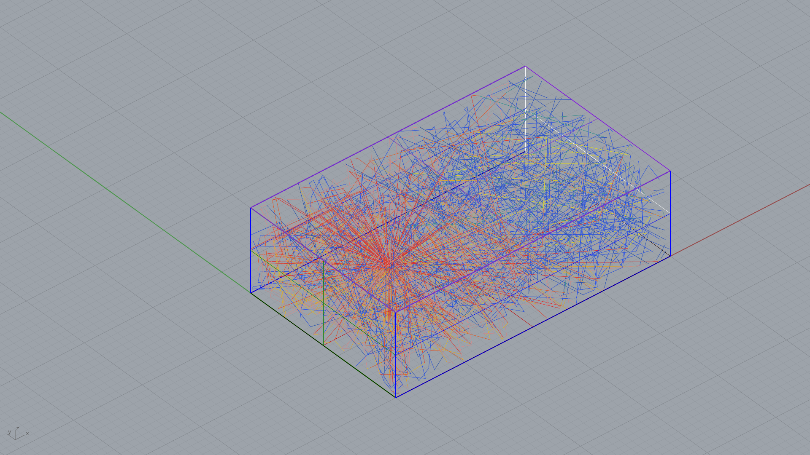

ARC 5443 AEIS · Lawrence Technological University · Program: MUSIC OPERA · Target: 1.6–2.0 s

| Frequency | Sabine RT60 | Eyring RT60 | Status |
|---|---|---|---|
| 125 Hz | 3.99 s | 3.71 s | TOO LIVE |
| 250 Hz | 3.73 s | 3.45 s | TOO LIVE |
| 500 Hz | 2.14 s | 1.85 s | IN RANGE |
| 1000 Hz | 1.84 s | 1.55 s | TOO DRY |
| 2000 Hz | 1.76 s | 1.47 s | TOO DRY |
| 4000 Hz | 1.69 s | 1.40 s | TOO DRY |
Status based on Eyring RT60 vs. program target [1.6–2.0 s].
| Surface | Material | Area (m²) | α 500 Hz | NRC | Absorption (sabins) |
|---|---|---|---|---|---|
| CARPET_THICK | Carpet Thick | 1000 | 0.57 | 0.68 | 570 |
| GYPSUM_BOARD | Gypsum Board | 1000 | 0.05 | 0.06 | 50 |
| CONCRETE_BARE | Concrete Bare | 960 | 0.02 | 0.03 | 19 |
| WOOD_PANEL | Wood Panel | 300 | 0.10 | 0.09 | 30 |
| ACOUSTIC_TILE | Acoustic Tile | 300 | 0.78 | 0.87 | 234 |
| TOTAL | 3560 m² | - | - | 903 sabins | |
NRC = average of α at 250, 500, 1000, 2000 Hz. Absorption sabins = area × α at 500 Hz.
| Parameter | Value |
|---|---|
| Volume | 12000 m³ (423776 ft³) |
| Total surface area | 3560 m² |
| Total absorption at 500 Hz | 903 sabins |
| Mean absorption coefficient (500 Hz) | 0.254 |
| Program type | MUSIC OPERA |
| RT60 target | 1.6–2.0 s |